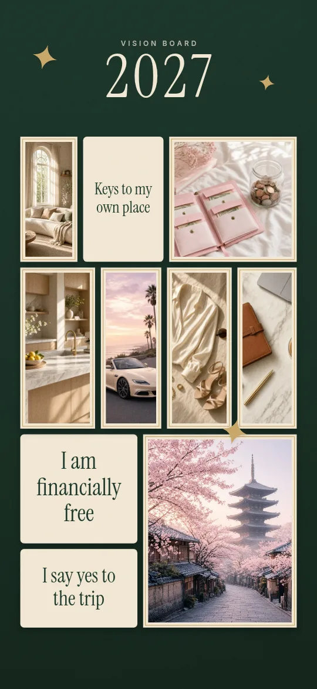

2027 AESTHETIC · OLD MONEY
Old money vision board: a quiet-luxury lock screen for 2027
The old money look is about calm confidence: tennis whites, a well-kept home, travel that feels effortless. It is a great match for money, career and lifestyle goals that you want to feel steady, not loud.



The Old Money look in one line
Racing green, cream, camel and antique gold. Matted frames, thin gold lines, and serif type in small caps.
What to put on it
- A sunlit desk with a leather planner for career and money
- The Amalfi coast or a Paris balcony for travel
- A classic car or a cream interior for the dream-home and dream-car goals
- A capsule wardrobe in camel and cream for style
- Books and a journal for personal growth
In Glowboard you just tap the goals you want (travel, money, love, style and more) and the matching photos and affirmations are added for you. You can also add your own photos. They stay on your phone.
Tips for a board you will actually look at
- Use fewer, larger photos. Quiet luxury is never crowded.
- Write goals as calm facts: “I invest every month” works better than ten exclamation marks.
- A dark background makes a phone feel premium and saves battery on OLED screens.
- “Rich in every way”
- “I invest in my future”
- “Quality over quantity”
- “Abundance is my normal”
- “I am financially free”
How to set it as your lock screen
iPhone: tap Save image (or long-press and choose “Save to Photos”). Open Photos, tap Share, then Use as Wallpaper. Android: open the image in Gallery or Google Photos, tap ⋮, then Set as wallpaper, then Lock screen.
FAQ
Is Old Money a free look?
Yes. Old Money is free. Pro adds watermark-free downloads, desktop 4K and printable sizes, and 9 more looks.
Can I use my own photos?
Yes. Add photos from your phone and they are placed into the collage. They never leave your device.
More 2027 looks


Glowboard is a free vision board wallpaper maker. There is no sign-up, and your photos never leave your device.